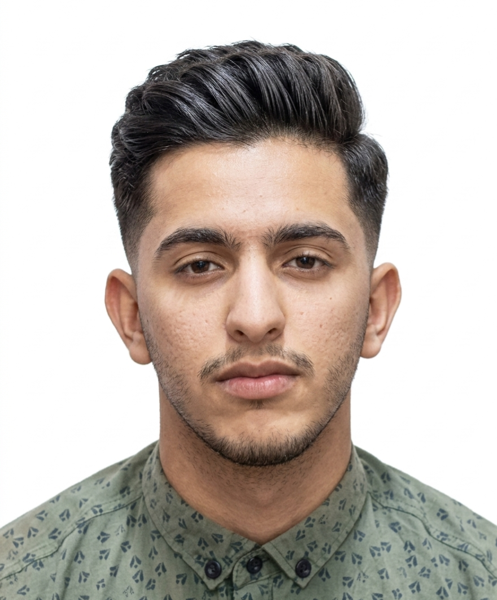

AI Engineer & CEO
Master's in AI & Databases · Software & SaaS Developer · Building intelligent systems that scale.
Education & Credentials
The Showcase
The Archive
From Research to Reality
About this Project